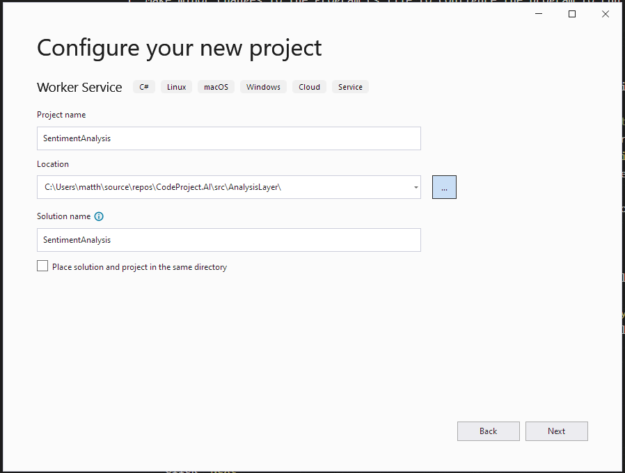
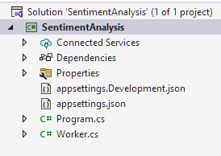
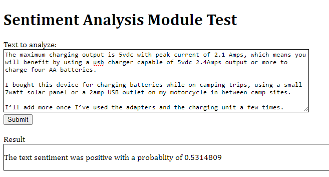

Adding your own .NET module: Sentiment Analysis
Introduction
This article will show how to create a Module in .NET for the CodeProject.AI Server by adapting existing code and adding an adapter. This will enable the functionality of the original code to be exposed as an HTTP endpoint by the CodeProject.AI Server. The process is similar to Adding your own Python module to CodeProject.AI, except we'll be using .NET instead of Python.
Again: ensure you've read Adding new modules to CodeProject.AI before you start.
Choosing a module
You can write your own module from scratch, or use one of the large number of Open Source AI projects currently available. There are thousands out there and for this article I chose the TextClassificationTF sample in the DotNet Samples repository. This project takes some text and returns whether the text has a positive or negative sentiment.
Adding the Module to CodeProject.AI
First, make sure you've cloned (or downloaded) the CodeProject.AI code from GitHub.
To add our chosen module to CodeProject.AI we will need to do the following (we'll go through each step in detail in a moment):
-
Create a new project in the CodeProject.AI solution to hold our module.
-
Create a modulesettings.json file in the project to configure the endpoint that will be exposed by the CodeProject.AI Server for this Module. The CodeProject.AI Server will discover this file on startup, configure the defined endpoints, and start the module's executable.
-
Copy over the code from the module you wish to add into the Project you just created. For neatness it can be preferable to create a sub-folder in the Project that houses the entire code from the other module.
The Goal is to ensure it's easy to include updates. The code you use will no doubt be updated over time. It's nice to be able to take the updated code and just drop it into the same sub-folder. Instant upgrade. Give or take a little plumbing.
-
Add references to any NuGet packages the original code referenced.
-
If required, refactor the copied code for general use. This is usually needed because many pieces of code you might find might have hardwired values or locations, may be designed to be called as an API, or as a command line, or be in a web application's controller somewhere deep.
You may need to make some (hopefully) minor changes to expose a function that your adapter can call, or replace hardwired values with values provided through environment variables. Again: the less changes you need to make the better, but some may be unavoidable.
-
Create a CodeProject.AI adapter by deriving a class to process the requests receive from the CodeProject.AI Server and return the response. You will derive from an abstract base class and only have to provide a method that processes the request. All the boilerplate Server/Module communication and error handling is taken care of for you.
-
Make minor changes to the project's
Program.csfile to configure the program to run the above code. -
Test. This can be done by using tools such as Postman or writing a simple web page to call the new endpoint on the CodeProject.AI Server.
Create the Module's Project
When you write a CodeProject.AI Module in NET 6, you are creating something that polls the CodeProject.AI Server for commands from a queue created for the module. The easiest way to do this is to create a Worker Service project in a folder under the src/modules. The CodeProject.AI Server scans the directories in this folder for Module metadata which allows the server to start the Modules.
The steps to do this are:
-
Right click on the src/modules folder in the Solution Explorer
- Select
Add->New Project - Select the Worker Service project template for C#
- Click
Next
- Select
This will open the Project Configuration dialog

- Set the
Project Nameto SentimentAnalysis - Set the
Locationto the src\modules directory in your copy of the CodeProject.AI solution. - click
Next.
This will open the Additional Information dialog

We don't need to change anything here, so click Create. This will create the project with the following structure

Create the modulesettings.json file
The modulesettings.json files configures the Module for
- whether it should be started
- how to start it
- what platforms it runs on
- the endpoint(s) that will be exposed by the CodeProject.AI Server for this Module. In this case we will be
- exposing
http://localhost:32168/v1/text/sentiment - using a the HTTP POST method
- sending one form variable
textthat will contain the text to be analyzed - and expect a JSON payload response with
- a Boolean
successproperty indicating if the operation was successfully completed - a Boolean
is_positiveproperty indicating if the input text had a positive sentiment - a float
positive_probabilityof the probability the input text had a positive sentiment where 0.5 is neutral.
- a Boolean
- exposing
In our case the modulesettings.json file will look like this
{
"Modules": {
"SentimentAnalysis": {
"Name": "Sentiment Analysis",
"Version": "1.1",
// Publishing info
"Description": "Provides an analysis of the sentiment of a piece of text. Positive or negative?",
"Platforms": [ "windows", "macos" ],
"License": "CC-BY-4.0",
"LicenseUrl": "https://github.com/dotnet/samples/blob/main/LICENSE",
// Launch instructions
"AutoStart": true,
"FilePath": "SentimentAnalysis.exe",
"Runtime": "execute",
"RuntimeLocation": "Shared", // Can be Local or Shared. .NET so moot point here
// Which server version is compatible with each version of this module.
"ModuleReleases": [
{ "ModuleVersion": "1.1", "ServerVersionRange": [ "2.1", "" ], "ReleaseDate": "2023-03-20" }
],
"RouteMaps": [
{
"Name": "Sentiment Analysis",
"Path": "text/sentiment",
"Method": "POST",
"Command": "sentiment",
"Description": "Determines if the supplied text has a positive or negative sentiment",
"Inputs": [
{
"Name": "text",
"Type": "Text",
"Description": "The text to be analyzed."
}
],
"Outputs": [
{
"Name": "success",
"Type": "Boolean",
"Description": "True if successful."
},
{
"Name": "is_positive",
"Type": "Boolean",
"Description": "Whether the input text had a positive sentiment."
},
{
"Name": "positive_probability",
"Type": "Float",
"Description": "The probability the input text has a positive sentiment."
},
{
"Name": "inferenceMs",
"Type": "Integer",
"Description": "The time (ms) to perform the AI inference."
},
{
"Name": "processMs",
"Type": "Integer",
"Description": "The time (ms) to process the image (includes inference and text manipulation operations)."
},
{
"Name": "analysisRoundTripMs",
"Type": "Integer",
"Description": "The time (ms) for the round trip to the analysis module and back."
}
]
}
]
}
}
}
modulesettings.development.json
This file overrides some of the modulesettings.json file values for the Development environment. In this case, the location of the executable will be found in the bin\debug\net7.0 directory rather than the Module's root folder, so we force the working directory to be the directory of the module, and update the location of the file to execute, relative to the module's folder.
{
"Modules": {
"SentimentAnalysis": {
"FilePath": "bin\\debug\\net7.0\\SentimentAnalysis.exe"
}
}
}
Copy code and assets from the sample code
The data and models uses by the sentiment analysis code are contained in the sentiment_model folder of the sample's repository. Copy this folder to the new module project.
The code to use the data and modules is all contained in the Program.cs file of the sample code. To copy over this code
- create a new class file
TextClassifier.cs - replace the contents of the
TextClassifierclass in this file with the contents of theProgramclass in theProgram.csfile of the sample code. We will fix this up in the next step
Include additional NuGet and Project dependencies
In order to build this project, there are a few dependencies that must be included:
- NuGet Packages that are required to use Microsoft's ML.NET framework and its support for TensorFlow models.
Microsoft.MLMicrosoft.ML.SampleUtilsMicrosoft.ML.TensorFlowSciScharp.TensorFlow.Redist
- Projects to use the CodeProject.AI NET SDK
CodeProject.AI.AnalsisLayer.SDK
Refactor the sample code for our use
The code from the sample code is intended as a specific example with hard-coded inputs and lots of Console.WriteLine statements to show lots of details of the operation of the code. We updated the code by
- turning the main() method into the class constructor TextClassifier
- making some variables into fields
- changing the PredictSentiment method to take parameters instead of using hard-coded values.
As the actual details of the changes are not what we are trying to accomplish with this article, the code is not shown here. The results of these changes can be seen in the code in the repository.
Create the Request Processor class
The next to last coding step is to create the background worker that will retrieve requests from the CodeProject.AI Server, process the request, and return the result. With the updated SDK, most of this has been encapsulated in an abstract class ModuleWorkerBase. All we have to do is create a new class file SentimentAnalysisWorker.cs and in this file
- create a response class
SentimentAnalysisResponse, derived fromBackendSuccessResponsewhich defines the structure of the modules response. - override the
SentimentAnalysisWorker.ProcessRequestmethod and - create the
SentimentAnalysisWorkerconstructor to initialize the functionality specific to the Module.
The completed SentimentAnalysisWorker.cs file is
using CodeProject.AI.SDK;
namespace SentimentAnalysis
{
class SentimentAnalysisResponse : BackendSuccessResponse
{
/// <summary>
/// Gets or set a value indicating whether the text is positive.
/// </summary>
public bool? is_positive { get; set; }
/// <summary>
/// Gets or sets the probability of being positive.
/// </summary>
public float? positive_probability { get; set; }
}
public class SentimentAnalysisWorker : ModuleWorkerBase
{
private readonly TextClassifier _textClassifier;
/// <summary>
/// Initializes a new instance of the SentimentAnalysisWorker.
/// </summary>
/// <param name="logger">The Logger.</param>
/// <param name="textClassifier">The TextClassifier.</param>
/// <param name="configuration">The app configuration values.</param>
public SentimentAnalysisWorker(ILogger<SentimentAnalysisWorker> logger,
TextClassifier textClassifier,
IConfiguration configuration)
: base(logger, configuration)
{
_textClassifier = textClassifier;
}
/// <summary>
/// The work happens here.
/// </summary>
/// <param name="request">The request.</param>
/// <returns>The response.</returns>
public override BackendResponseBase ProcessRequest(BackendRequest request)
{
string text = request.payload.GetValue("text");
if (text is null)
return new BackendErrorResponse($"{ModuleName} missing 'text' parameter.");
Stopwatch sw = Stopwatch.StartNew();
var result = _textClassifier.PredictSentiment(text);
long inferenceMs = sw.ElapsedMilliseconds;
if (result is null)
return new BackendErrorResponse($"{ModuleName} PredictSentiment returned null.");
var response = new SentimentAnalysisResponse
{
is_positive = result?.Prediction?[1] > 0.5f,
positive_probability = result?.Prediction?[1],
processMs = inferenceMs,
inferenceMs = inferenceMs
};
return response;
}
}
}
Hook it all up
Hooking everything together trivial. In the Program.cs file
- Change the line
to
- Add TextClassifier to the DI container by adding the line
just before the previously line. The file should look like
You will want to make the SentimentAnalysis a Build Dependency of the Frontend projects so that it is built when the CodeProject.AI Server is built.
Test it.
To test this, I created a simple test.html page that takes some text, sends it to the
CodeProject.AI Server, and handles and displays the result. It's as bare bones as I could make
it to show how easy it is to use the new feature.
<!DOCTYPE html>
<html lang="en" xmlns="http://www.w3.org/1999/xhtml">
<head>
<meta charset="utf-8" />
<title>Sentiment Analysis Module Test</title>
<script type="text/javascript">
function doAnalysis(textToSend) {
var formData = new FormData();
formData.append('text', textToSend);
fetch('http://localhost:32168/v1/text/sentiment', {
method: 'POST',
body: formData,
cache: "no-cache"
})
.then(response => {
if (!response.ok) {
result.innerText = `Http error! Status : ${response.status}`;
}
return response.json().then(data => {
var resultHTML = data.is_positive
? `<p>The text sentiment was positive with a probablity of ${data.positive_probability}</p>`
: `<p>The text sentiment was negative with a probablity of ${1.0 - data.positive_probability}</p>`;
result.innerHTML = resultHTML;
});
});
}
</script>
</head>
<body>
<h1>Sentiment Analysis Module Test</h1>
<form method="post" action="" enctype="multipart/form-data" id="myform">
<div>
<label for="textToAnalyze">Text to analyze:</label>
<div>
<textarea id="textToAnalyze" name="textToAnalyze" rows="8" cols="80" style="border:solid thin black"></textarea>
</div>
</div>
<div>
<button type="button" onclick="doAnalysis(textToAnalyze.value)">Submit</button>
</div>
<br />
<div>
<label for="result">Result</label>
<div id="result" name="result" style="border:solid thin black"></div>
</div>
</form>
</body>
</html>
To see this in action, run the Frontend project (CodeProject.AI Server) in the Debugger in Debug configuration and then open the test.html file in the browser of choice. Copy some text into the text box and press submit. I used text from an Amazon review. You should see something similar to this:

Added Bonus - XCOPY deploy Module on Windows.
NET 6 modules do not depend on the installation of any runtimes or the setup of virtual environments the same way Python modules are. The NET 6 runtime is already installed by the CodeProject.AI Server installer. Because of this, the Release version of the build can be bin deployed into an existing Windows installation of the CodeProject.AI Server. The steps to do this are:
- Build the module project in
Releasemode. - Create a folder in the
c:\Program Files\CodeProject\AI\modulesdirectory. This directory should have the same name as the module ID in themodulesettings.jsonfile. For this example that would be "SentimentAnalysis". - Copy the contents of the project's bin\Release\net7.0 directory to the directory created in the previous step.
- Using the
Serviceapp, restart the CodeProject.AI Server service. The new module will now be expose on the endpoint defined in the modulesettings.json file.
Summing up
Adding a new module to CodeProject.AI is generally not that difficult. You need to
- Choose a module that is self contained and can expose functionality as a method call.
- Create a project in the AnalysisServices folder to house your projects, and copy over the code
- Create an adapter that will interface between the CodeProject.AI server and your code
- Ensure you have the models and dependencies in place
- Create a modulesettings.json file to describe to the server how to start the module
- Make any minor changes needed to the module you're adding to allow it to function with your adapter and modify the Program.cs file to get things rolling
Your module is now part of your CodeProject.AI ecosystem and any clients that make use of the server can now access your new module seamlessly. Congratulations!